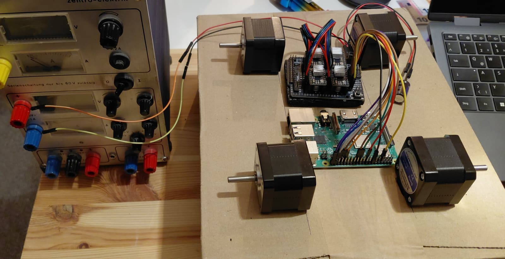
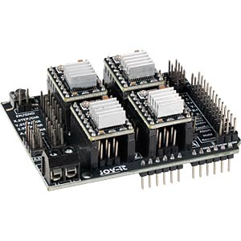
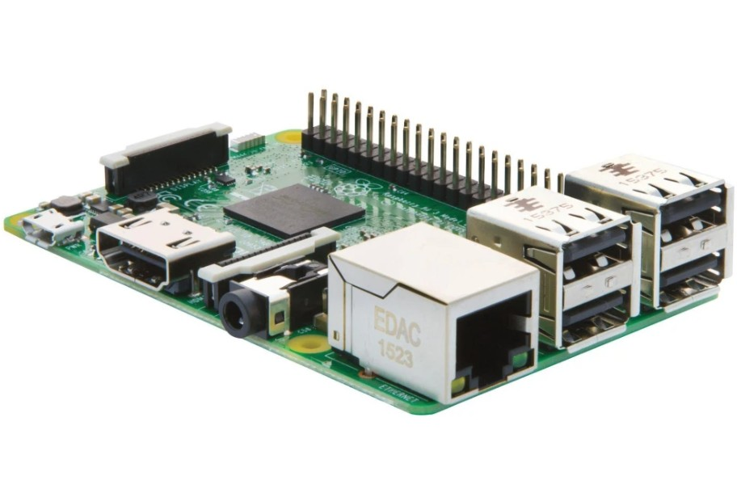
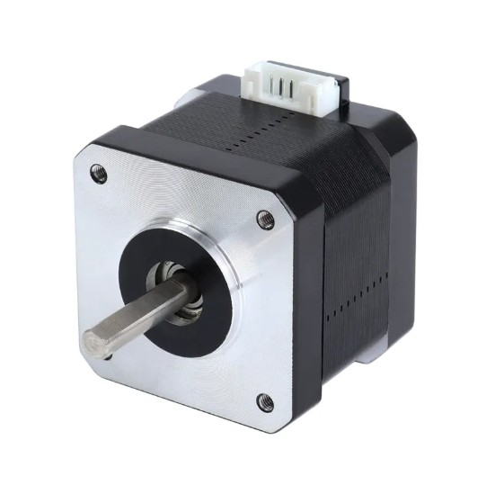

08Fotos und Videos
So klingen die Motoren.
In der Halle des Bergkönigs, vierstimmig
Nokia-Klingelton auf einem Motor
Alle meine Entchen, der erste Test
Nahaufnahme: Motorwelle und Treiber im Betrieb


Singing Motors lässt vier Schrittmotoren Musik spielen. Ein Raspberry Pi schickt jedem Motor einen eigenen Impulstakt, und jede Frequenz wird zu einem Ton.
4 Stimmen NEMA 17 DRV8825 Pi 3B+ Python
Schrittmotoren stecken in 3D-Druckern, CNC-Fräsen und Scannern. Wer schon einmal einen davon arbeiten gehört hat, kennt das typische Summen. Die Tonhöhe hängt direkt davon ab, wie schnell der Motor angesteuert wird. Daraus entstand die Frage: Was passiert, wenn man die Geschwindigkeit nicht nach der Mechanik, sondern nach einer Melodie wählt?
Das Ergebnis ist ein Instrument aus vier Motoren. Jeder übernimmt eine eigene Stimme, etwa Melodie, Bass und zwei Begleitstimmen. Gesteuert wird alles von einem Raspberry Pi, der für jeden Motor eine eigene Impulsfolge berechnet.
Das Projekt verbindet drei Bereiche: Software (Python, Zeitsteuerung, Notenberechnung), Hardware (GPIO, Motortreiber, Stromversorgung) und Musik (Stimmen, Tempo, Arrangement).

Ein Schrittmotor dreht sich bei jedem Impuls am STEP-Eingang um genau einen Schritt weiter. Kommen die Impulse schnell genug, verschmelzen die einzelnen Rucke zu einem Ton.
Jeder Wechsel von Low auf High am STEP-Pin bewegt den Rotor um 1,8°.
440 Impulse pro Sekunde lassen das Gehäuse mit 440 Hz schwingen. Das ist der Kammerton A.
Eine Liste aus Frequenzen und Dauern ergibt ein Musikstück.
Jede Note hat eine MIDI-Nummer \(m\). In gleichstufiger Stimmung gilt:
Für ein Rechtecksignal mit der Frequenz \(f\) wechselt der STEP-Pin nach jeder halben Periode den Pegel:
Der DRV8825 begrenzt den Spulenstrom über die Referenzspannung. Mit dem verbauten Messwiderstand von \(0{,}1\,\Omega\) gilt:
Das CNC-Shield ist eigentlich für einen Arduino Uno gedacht. Hier liefert stattdessen der Raspberry Pi Steuersignale und Logikspannung, ein Labornetzteil die Motorspannung.
| Komponente | Modell | Daten |
|---|---|---|
| Steuerrechner | Raspberry Pi 3B+ | Raspberry Pi OS Lite, Zugriff per SSH |
| Trägerplatine | Joy-IT ARD-CNC-Kit2 | 4 Steckplätze X, Y, Z, A · 12–35 V |
| Motortreiber | 4 × Joy-IT SBC-MD-DRV8825 | \(R_{\text{sense}} = 0{,}1\,\Omega\), Vollschritt |
| Schrittmotoren | 4 × StepperOnline 17HE15-1504S | NEMA 17 · 1,5 A · 200 Schritte/U |
| Netzteil | Labornetzteil 0–30 V | 12 V, max. 1 A |
| Kondensator | Elektrolytkondensator | ≥ 25 V, an der Versorgungsklemme |



Logik- und Leistungskreis sind getrennt versorgt und nur über die gemeinsame Masse verbunden.
| Motor | Achse | Stimme | STEP | DIR |
|---|---|---|---|---|
| 1 | A | Terz | Pin 38 · GPIO20 | Pin 40 · GPIO21 |
| 2 | Z | Melodie | Pin 35 · GPIO19 | Pin 37 · GPIO26 |
| 3 | Y | Quinte | Pin 31 · GPIO6 | Pin 33 · GPIO13 |
| 4 | X | Bass | Pin 21 · GPIO9 | Pin 23 · GPIO11 |
| Enable (Low = an) | Pin 7 · GPIO4 | |||
| Logikversorgung | Pin 17 · 3,3 V → 5V-Pin des Shields | |||
| Masse | Pin 14 · GND | |||
Der Einstieg: Ein Motor spielt Alle meine Entchen. Die Funktion ton() schaltet den STEP-Pin so oft an und aus, wie es Frequenz und Dauer verlangen.
import time
import RPi.GPIO as GPIO
STEP = 19 # Pin 35, Achse Z
DIR = 26 # Pin 37
EN = 4 # Pin 7, Low = Treiber an
# Frequenzen in Hz (C-Dur, vierte Oktave)
C, D, E, F, G, A = 262, 294, 330, 349, 392, 440
# (Frequenz, Dauer in Sekunden); 0 = Pause
MELODIE = [
(C, 0.3), (D, 0.3), (E, 0.3), (F, 0.3), (G, 0.6), (G, 0.6),
(A, 0.3), (A, 0.3), (A, 0.3), (A, 0.3), (G, 1.2),
(A, 0.3), (A, 0.3), (A, 0.3), (A, 0.3), (G, 1.2),
(F, 0.3), (F, 0.3), (F, 0.3), (F, 0.3), (E, 0.6), (E, 0.6),
(D, 0.3), (D, 0.3), (D, 0.3), (D, 0.3), (C, 1.2),
]
def ton(frequenz, dauer):
"""Erzeugt STEP-Pulse: ein Puls = ein Schritt = eine Schwingung."""
if frequenz == 0:
time.sleep(dauer)
return
halbe_periode = 1 / (2 * frequenz)
for _ in range(int(frequenz * dauer)):
GPIO.output(STEP, GPIO.HIGH)
time.sleep(halbe_periode)
GPIO.output(STEP, GPIO.LOW)
time.sleep(halbe_periode)
GPIO.setmode(GPIO.BCM)
GPIO.setup([STEP, DIR], GPIO.OUT, initial=GPIO.LOW)
GPIO.setup(EN, GPIO.OUT, initial=GPIO.LOW) # Treiber an
try:
for frequenz, dauer in MELODIE:
ton(frequenz, dauer)
time.sleep(0.05) # kurze Lücke, damit gleiche Töne getrennt klingen
finally:
GPIO.output(EN, GPIO.HIGH) # Treiber aus, auch bei Strg+C
GPIO.cleanup()Für mehrere Stimmen reicht time.sleep() nicht mehr, weil alle Motoren gleichzeitig laufen müssen. bergkoenig.py plant deshalb jede Flanke auf einer gemeinsamen Zeitachse und prüft in einer Schleife mit time.perf_counter(), welcher Motor als Nächstes schalten muss. Ein stetiges Accelerando wie im Original von Grieg (1875, gemeinfrei) entsteht über ein linear steigendes Tempo:
\(b\): Position in Vierteln · \(B\): Länge des Accelerandos · \(T_0, T_1\): Start- und Endtempo in BPM
def spiele(stimmen):
"""Mehrstimmig: stimmen = [(pin, [(start_s, stop_s, halbe_periode_s), ...]), ...]"""
n = len(stimmen)
pins = [p for p, _ in stimmen]
evs = [e for _, e in stimmen]
idx, naechste = [0] * n, [0.0] * n
aktiv, pegel = [False] * n, [False] * n
ende = max(e[-1][1] for e in evs if e)
ausgabe, uhr = GPIO.output, time.perf_counter
t0 = uhr()
while True:
jetzt = uhr() - t0
if jetzt >= ende:
break
for k in range(n):
ev = evs[k]
i = idx[k]
if i >= len(ev):
continue
start, stop, hp = ev[i]
if jetzt >= stop:
idx[k] = i + 1
aktiv[k] = False
continue
if jetzt < start:
continue
if not aktiv[k]:
aktiv[k] = True
naechste[k] = start
if jetzt >= naechste[k]:
pegel[k] = not pegel[k]
ausgabe(pins[k], pegel[k])
naechste[k] += hp
if naechste[k] < jetzt:
naechste[k] = jetzt + hp
for p in pins:
ausgabe(p, GPIO.LOW)sudo apt install python3-rpi.gpio
scp code/bergkoenig.py <user>@<hostname>.local:~
ssh <user>@<hostname>.local "python3 ~/bergkoenig.py"Der Raspberry Pi hostet eine eigene Weboberfläche (code/midi.py, Port 8080). Im Browser lassen sich MIDI-Dateien hochladen und abspielen, während Balkenanzeige, Drehzahlen und Piano Roll live mitlaufen. Die Dateien liegen nur im Arbeitsspeicher, es gibt keinen Login, deshalb nur im vertrauten Netz nutzen.
Der Weg vom ersten Konzept zum vierstimmigen Instrument, einschließlich der Fehler, die unterwegs gelöst werden mussten.
Erste Planung mit vier NEMA-17-Motoren, DRV8825-Treibern und einem CNC-Shield. Budgetrahmen etwa 80 €. Bestellung der Bauteile.
Motor an Steckplatz Z angeschlossen. Spulenpaare per Widerstandsmessung bestimmt: Schwarz + Blau und Grün + Rot, je etwa 2,9–3 Ω.
VREF zeigte 0 V, das Potentiometer hatte keine Wirkung. Ursache: Ohne Arduino fehlt am Shield die Logikspannung. Lösung: 3,3 V vom Pi (Pin 17) an den 5V-Pin des Shields.
Das Skript lief, der Motor stand und ließ sich frei drehen. Ursache: Die Steckbrücke steckte auf E-STOP statt auf EN/GND, der Treiber blieb deaktiviert.
VREF auf 0,487 V justiert, das ergibt etwa 0,97 A Spulenstrom. Der Treiber hält den Motor bestromt fest.
Raspberry Pi OS Lite installiert, Zugriff per SSH eingerichtet. Skripte werden per scp übertragen und direkt auf dem Pi gestartet.
Alle vier Steckplätze mit eigenen STEP- und DIR-Pins belegt, EN über Pin 7 gesteuert. Mit bergkoenig.py spielen die Motoren erstmals vierstimmig.
Genaueres Timing über DMA-Wellenformen (pigpio) oder einen Mikrocontroller als Taktgeber. MIDI-Dateien direkt einlesen und auf vier Stimmen verteilen. Stärkeres 12-V-Netzteil für den Dauerbetrieb aller Motoren.
So klingen die Motoren.